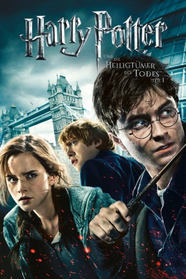

Auszeichnungen: für 2 Oscars nominiert
 gesehen am 09.03.2015
gesehen am 09.03.2015Alternativ: Harry Potter and the Deathly Hallows: Part 1
Auszeichnungen: für 2 Oscars nominiert gesehen am 09.03.2015
 
 IMDB-Wertung: 7.7 / 10
IMDB-Wertung: 7.7 / 10  Metascore:
Metascore: 
Harry sieht sich einer vollkommen veränderten Welt gegenüber. Die Todesser haben das Zauberministerium unter ihre Kontrolle gebracht und es tobt ein offener Kampf zwischen den Mächten des Guten und Bösen. Harry hat sich mit Hermine und Ron auf die Suche nach den “Horkruxen“ gemacht, magischen Objekten, die die Unsterblichkeit von Lord Voldemort garantieren und zerstört werden müssen. Der dunkle Lord hat seinerseits ein Kopfgeld auf Harry ausgesetzt, denn er will sich das Vergnügen den “Jungen der überlebte“ mit den eigenen Händen zu töten, nicht nehmen lassen. Unterdessen stößt Harry auf die Legende von den Heiligtümern des Todes, die ihm im Kampf gegen seinen Erzfeind das Leben retten könnte. Und so strebt alles unaufhaltsam der finalen Konfrontation zwischen den beiden Magiern entgegen, auf die Harry sich seit Beginn seiner Schullaufbahn vorbereitet hat.
Jahr: 2010
Dauer: 146 Minuten
FSK: 12
Land: England Studio: Warner Bros.Tonspuren: DD5.1 - ,
Untertitel:
Auflösung: 1080p (1920×800) Größe: 14336 MB
Genre: Abenteuer, Familie, Fantasy, Mystery
Regisseur: David Yates
Drehbuch: Steve Kloves, J.K. Rowling
Soundtrack: Alexandre Desplat
Darsteller:
 Bill Nighy als Minister Rufus Scrimgeour
Bill Nighy als Minister Rufus Scrimgeour Emma Watson als Hermione Granger
Emma Watson als Hermione Granger Harry Melling als Dudley Dursley
Harry Melling als Dudley Dursley Daniel Radcliffe als Harry Potter
Daniel Radcliffe als Harry Potter Julie Walters als Molly Weasley
Julie Walters als Molly Weasley Bonnie Wright als Ginny Weasley
Bonnie Wright als Ginny Weasley Rupert Grint als Ron Weasley
Rupert Grint als Ron Weasley Michelle Fairley als Mrs. Granger
Michelle Fairley als Mrs. Granger Fiona Shaw als Petunia Dursley
Fiona Shaw als Petunia Dursley Alan Rickman als Professor Severus Snape
Alan Rickman als Professor Severus Snape Ralph Fiennes als Lord Voldemort
Ralph Fiennes als Lord Voldemort Helena Bonham Carter als Bellatrix Lestrange
Helena Bonham Carter als Bellatrix Lestrange Helen McCrory als Narcissa Malfoy
Helen McCrory als Narcissa Malfoy Jason Isaacs als Lucius Malfoy
Jason Isaacs als Lucius Malfoy Tom Felton als Draco Malfoy
Tom Felton als Draco Malfoy Timothy Spall als Wormtail
Timothy Spall als Wormtail Peter Mullan als Death Eater Yaxley
Peter Mullan als Death Eater Yaxley Arben Bajraktaraj als Antonin Dolohov
Arben Bajraktaraj als Antonin Dolohov Ralph Ineson als Amycus Carrow
Ralph Ineson als Amycus Carrow Emil Hostina als Death Eater
Emil Hostina als Death Eater Richard Strange als Death Eater
Richard Strange als Death Eater Michael Gambon als Professor Albus Dumbledore
Michael Gambon als Professor Albus Dumbledore David Ryall als Elphias Doge
David Ryall als Elphias Doge Robbie Coltrane als Rubeus Hagrid
Robbie Coltrane als Rubeus Hagrid Brendan Gleeson als Alastor 'Mad-Eye' Moody
Brendan Gleeson als Alastor 'Mad-Eye' Moody James Phelps als Fred Weasley
James Phelps als Fred Weasley Oliver Phelps als George Weasley
Oliver Phelps als George Weasley Mark Williams als Arthur Weasley
Mark Williams als Arthur Weasley George Harris als Kingsley Shacklebolt
George Harris als Kingsley Shacklebolt Domhnall Gleeson als Bill Weasley
Domhnall Gleeson als Bill Weasley Natalia Tena als Nymphadora Tonks
Natalia Tena als Nymphadora Tonks David Thewlis als Remus Lupin
David Thewlis als Remus Lupin John Hurt als Ollivander
John Hurt als Ollivander Frances de la Tour als Madame Maxime
Frances de la Tour als Madame Maxime Evanna Lynch als Luna Lovegood
Evanna Lynch als Luna Lovegood Rhys Ifans als Xenophilius Lovegood
Rhys Ifans als Xenophilius Lovegood Simon McBurney als Kreacher
Simon McBurney als Kreacher Matthew Lewis als Neville Longbottom
Matthew Lewis als Neville Longbottom Devon Murray als Seamus Finnigan
Devon Murray als Seamus Finnigan Freddie Stroma als Cormac McLaggen
Freddie Stroma als Cormac McLaggen Jessie Cave als Lavender Brown
Jessie Cave als Lavender Brown Josh Herdman als Gregory Goyle
Josh Herdman als Gregory GoyleDatei: X:\7+mehr(A-Z)\Harry Potter\Harry Potter 7.1 - und die Heiligtümer des Todes (2010, FSK12, 1920x800).mkv seit 15.02.2015
Festplatte: HD Collection-7+mehr(A-Z)+Person
 Es gibt insgesamt 17 Filme in der Gruppe '7+mehr(A-Z)\Harry Potter'
Es gibt insgesamt 17 Filme in der Gruppe '7+mehr(A-Z)\Harry Potter'